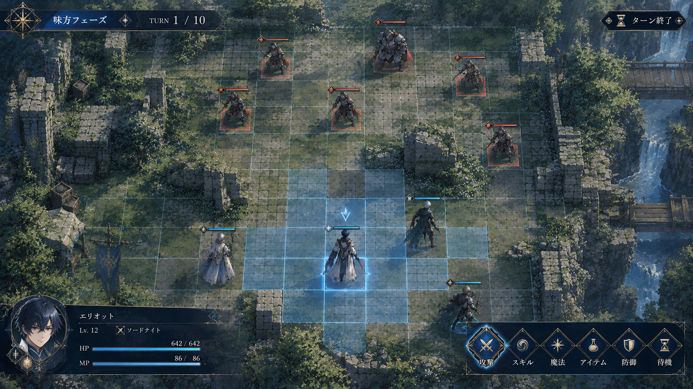
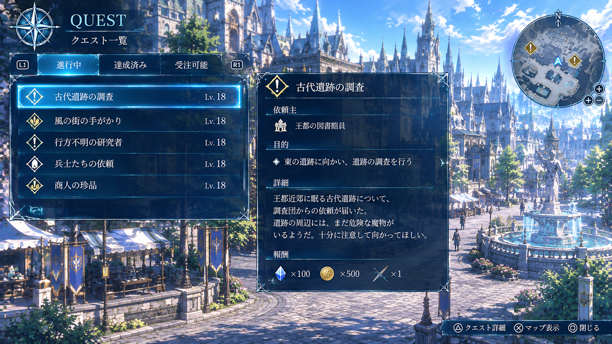
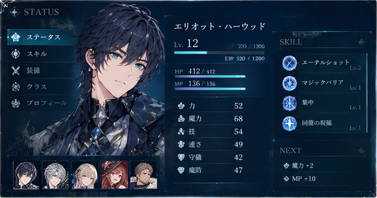
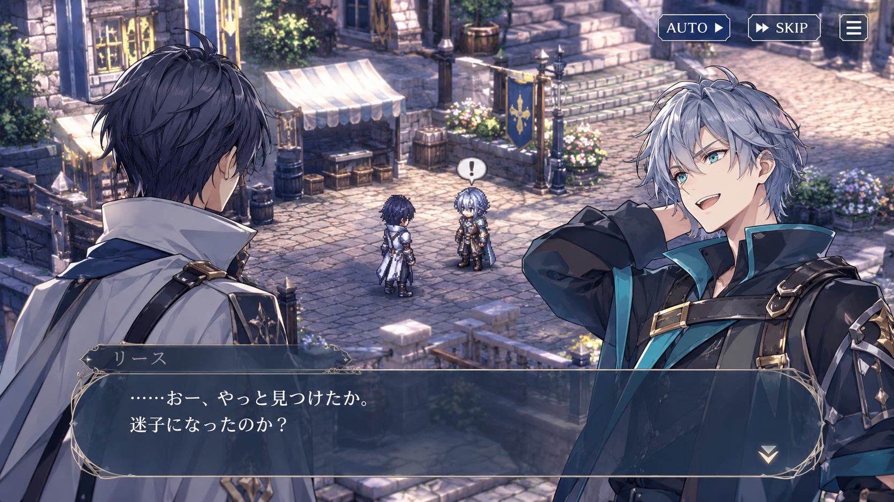
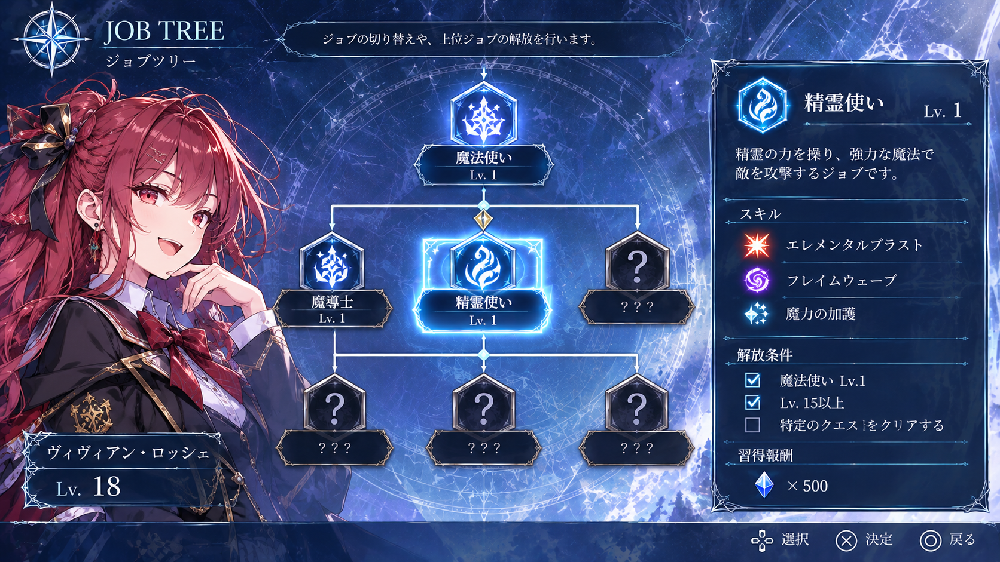

01 / BATTLE
戦略的なターン制バトル
TACTICAL BATTLE
マス目の戦場で味方と敵が交互に行動するターン制バトル。仲間の配置や武器・魔法の使い分けが勝敗を左右する。
戦術バトル、世界の探索、仲間の育成。自分だけの戦い方を見つけよう。

マス目の戦場で味方と敵が交互に行動するターン制バトル。仲間の配置や武器・魔法の使い分けが勝敗を左右する。

ワールドマップから各地を自由に探索。依頼やサブクエストを通じて、報酬や新たな出会いを見つけよう。

物語やサブクエストで、20人以上の仲間と出会おう。能力や得意分野を見極め、自分だけの部隊を編成できる。

戦闘で経験を積み、仲間を育成しよう。上位職や武器・アクセサリーの組み合わせで、能力や戦い方をカスタマイズできる。

武器やアクセサリーを集め、仲間に合わせて装備を変更。育成や編成を試しながら、自分だけの戦術を極めよう。